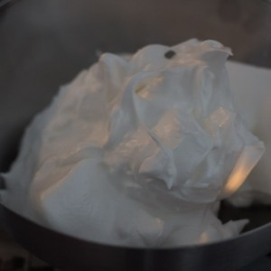
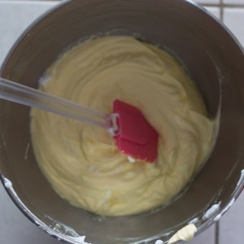
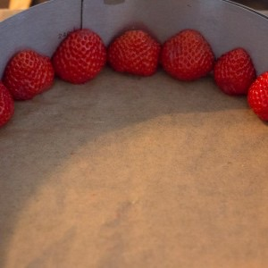
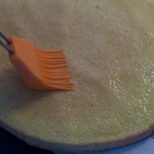
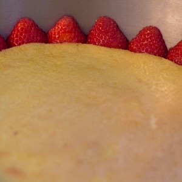
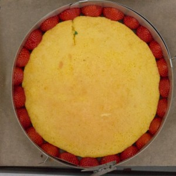
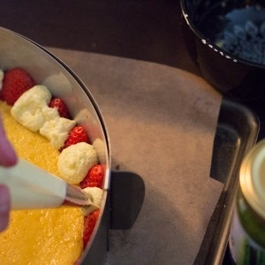
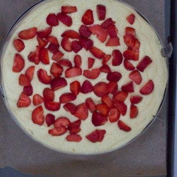
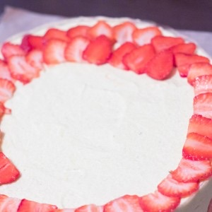

Fraisier pistache

Ça faisait plusieurs jours que j’en parlais alors aujourd’hui je vous donne enfin la recette du fraisier pistache que j’avais fait lors de la fête des mères et qui je crois vous avez beaucoup plu.
En fait cela faisait pas mal de temps que j’avais envie de refaire un gros gâteau qui prend du temps mais dont on est fière après l’avoir réalisé (comme le rainbow cake par exemple). Vous connaissez sans doute à force mon addiction pour les fraises alors il était temps de faire un beau fraisier et la fête des mères tombait à pic! J’ai fait un fraisier pistache pour changer un peu de la recette classique et c’était vraiment délicieux (pour faire un fraisier sans pistache il suffit d’enlever la pâte de pistache des ingrédients^^)
Pour la crème que vous trouvez dans cette recette de fraisier je suis restée très classique puisque j’ai fait une crème mousseline légère à la pistache. Pour ceux qui se posent la question, la crème mousseline est l’association d’une crème pâtissière mélangée à une crème au beurre et qui se trouve dans la composition de beaucoup de pâtisseries. La crème au beurre de cette recette est légère, un peu plus longue à faire mais absolument délicieuse et c’est ce qui compte après tout! Comme vous pouvez le voir sur la photo j’ai décoré mon fraisier pistache de fraises sur le dessus mais vous pouvez tout à fait mettre un disque de pâte d’amande ce sera tout aussi bon!! Un petit conseil si vous n’êtes pas équipés pour ce genre de gâteau, moi j’ai acheté un cercle réglable chez Leclerc à côté de chez moi pour même pas 30 euros et il a très bien fait l’affaire. Un cercle réglable est très pratique car cela permet de vraiment bien ajuster la taille du fraisier ou encore des génoises que l’on veut!
Je ne vous mentirai pas, oui il faut pas mal de temps devant soi pour faire un fraisier mais il faut surtout être bien organisé et mais après ça va tout seul 🙂 Je vous conseille de bien préparer tous vos ingrédients et si besoin, de lire plusieurs fois la recette pour ne rien louper!! Si vous avez des questions n’hésitez pas! Je vous laisse maintenant avec la recette du fraisier.
Désolé, il n’y a pas de photos de fraisier coupé mais le fraisier, mon chéri et moi même partions pour deux heures de route, alors dur dur d’enlever la bande de rhodoïd et d’amener un fraisier découpé! Ce sera pour la prochaine fois 🙂
Ingrédients
- Oeufs - 200g (environ 4)
- Sucre - 125g
- Farine - 125g
- Lait - 500 g
- Jaunes d'oeuf - 100 g
- Jaunes d'oeufs - 2 gros
- Sucre - 120g
- Sucre - 120g
- Sucre - 100g
- Sucre - 25g
- Maïzena - 120g
- Beurre - 50g
- Vanille - 1 gousse
- Eau - 40g
- Eau - 50g
- Blancs d'oeuf à temp ambiante - 70g
- Beurre mou - 180g
- Pâte de pistache (facultatif) - 30g
- Eau - 120ml
- Sucre - 70g
- Kirsch - 20ml
- Fraises - 800g
- Eau - 50ml
- Citron - 1/2 jus de citron
- Gélatine - 2 feuilles
- Rhodoïd
- Cercle à patisserie 24 cm
- Un thermomètre
Instructions
- Faites chauffer 120ml d'eau et 70g de sucre
- Verser le kirsch hors du feu
- Réserver
- Préchauffer le four à 180°
- Dans un saladier verser les œufs et le sucre
- Au dessus d'un bain marie, fouetter ce mélange jusqu'à ce qu'il atteigne 50°
- Une fois que le mélange atteint 50°, sortir du bain marie
- Continuer de fouetter hors du feu jusqu'à ce que le mélange baisse en température
- Ajouter délicatement la farine tamisée en plusieurs fois (2/3 fois)
- Étaler le mélange sur un tapis en silicone et lisser à l'aide d'une spatule (ou en deux fois dans votre moule)
- Enfourner pendant 15 minutes (surveiller bien la cuisson)
- Découper deux cercles de 22cm dans votre génoise
- Réserver
- Dans un saladier (style cul de poule), blanchir les 100g de jaunes d’œufs avec le sucre (120g)
- Ajouter la maïzena
- Porter à ébullition le lait et la gousse de vanille fendue en deux dans le sens de la longueur
- Laisser infuser puis retirer la gousse de vanille
- Verser la moitié du lait sur le mélange jaunes d'oeufs-sucre-maïzena
- Fouetter le mélange
- Remettre le tout dans la casserole contenant le reste de lait et mélanger sur feu vif (sans vous arrêter de fouetter)
- Sortir la casserole du feu lorsque la crème a épaissi (à partir des premiers signes d'ébullition compter 1minutes 30sec et sortir du feu)
- Ajouter le beurre (50g)
- Verser dans un grand plat pour la refroidir et filmez la crème pour qu'elle ne soit pas en contact avec l'air
- Dans une casserole, faire chauffer l'eau (40g) et le sucre (100g) sur feu doux
- Laisser monter en température
- Quand le sirop de sucre arrive à 118°C monter les blanc en neige avec 25g de sucre
- Verser le sirop de sucre sur les blancs en neige montés
- Réserver ce mélange dans un saladier
- Dans le bol de votre robot, fouettez les jaunes d’œufs
- Dans une casserole faites à nouveau un sirop de sucre avec 120g de sucre et 50g d'eau
- Monter à 118°C
- Verser le sirop sur les jaunes et faire tourner à grande vitesse jusqu'à ce que le mélange blanchisse
- Pendant ce temps, mixer le beurre mou jusqu'à ce qu'il devienne une crème lisse
- Incorporez le beurre aux jaunes d’œufs
- Ajoutez ensuite le mélange 1 et faites tourner votre robot à faible vitesse pour obtenir une crème au beurre bien aérienne
- Peser 150g de crème pâtissière
- Retravaillez la au fouet pour qu'elle soit bien souple
- Mélanger votre crème beurre et votre crème pâtissière
- Ajouter 30 g de pâte à pistache (plus ou moins selon les goûts de chacun)
- Mélangez doucement jusqu'à obtenir un mélange bien homogène
- Placer du rhodoïd autour d'un cercle à pâtisserie de 24cm
- Couper en deux des fraises et placer les tout autour du cercle
- Imbiber la partie haute de la génoise de sirop au kirsch
- Placez-la au fond du cercle Il est possible de devoir réajuster la taille de la génoise pour qu'elle rentre parfaitement
- Remplir une poche à douille de crème mousseline
- Combler les trous entre les fraises avec la crème
- Une fois les trous comblés, repartissez la moitié de crème restante sur la génoise
- Recouvrir de fraises coupées en morceaux
- Recouvrir de crème (en gardant un peu pour recouvrir le haut du gâteau soit environ 4 bonnes càs)
- Imbiber la deuxième génoise et déposer le côté imbibé sur la crème
- Imbiber ensuite l'autre côté
- Recouvrir du reste de crème
- Lisser à l'aide d'une spatule
- Laisser prendre au frais pendant 2 bonnes heures
- Couper vos fraises en fines lamelles et réserver
- Placer les feuilles de gélatine dans un grand volume d'eau froide
- Dans une casserole faites chauffer le jus d'un demi citron avec l'eau
- Quand le mélange frémit, le sortir du feu
- Essorez les feuilles de gélatine
- Faire fondre la gélatine dans le mélange citron-eau
- Réserver
- Sortir le gâteau du frais
- Enlever le cercle à pâtisserie (mais pas la bande rhodoïd)
- Disposer toutes les fraises coupées en lamelles sur le dessus
- A l'aide d'un pinceau passer une fine couche de nappage
- Placer au frais 30 minutes
- Gardez-le au frais jusqu'au moment de servir (il se conserve deux jours)









Les tips de la communauté
Très beau visuellement et délicieux au goût. La crème mousseline est légère et savoureuse. Quelques remarques sur la technique exact de la crème (débat mousseline vs crème au beurre) mais aucune remise en question du résultat.
Astuces
- La crème est remarquablement légère et délicieuse en bouche
- Besoin d'un cercle réglable (Alice Délice ~14 euros) pour la présentation
- Pâte de pistache disponible en hypermarché (Leclerc)
- Thermomètre de cuisson recommandé (sinon test du doigt : chaud mais pas brûlant)
- Peut être adapté sans pâte de pistache - fonctionne aussi nature
Variantes suggérées
- Faire la recette nature sans pâte de pistache
- Augmenter les proportions pour 6 personnes (diviser les quantités)
- Utiliser un cercle en silicone réglable (très facile à démouler)
Ajustements signalés
- Crème mousseline : combinaison de pâtissière et beurre, pas crème au beurre pur